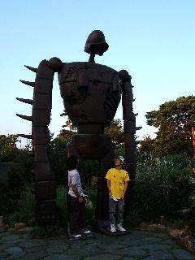
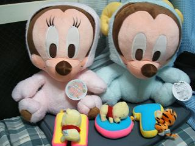
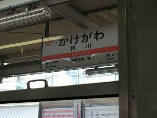

日々、想ふ
日々、想ふ
World Wide Homepage。９/１３
kanbojia kara koushintyuu,TAKEYUKIdesu.
ima Angkor Wat kara yaku 8km hanareta mati Siem Reap no
hoteru ni tomatteimasu.
1niti 25US$ de pool tuki no heya desu.
ashita Angkor Wat ni ikimasu, buji ikitemasu.
tabun kono ryokoutyuuniha mou koushin dekinai to omoimasu.
ikite kaeritaidesu,TAKEYUKI from Combodia desita-.
日本語に変換↓（日本語がおかしかったとこは適宜訂正）
カンボジアから更新中、タケユキです。
今アンコールワットから約８km離れた街、
シェムリアップの
ホテルに泊まっています。
１日２５＄でプール付きのホテルの部屋に宿泊中です。
明日はついにアンコールワットに行きます、無事生きてます。
たぶんこの旅行中にはもう更新できないと思います。
とにかく無事生きて帰りたいです、タケユキfromカンボジアでした〜。
海を越える。９/１１
今回東京行った出来事を想ひ出に追加してます、
東京観光〜日本の首都というところ〜 っていうタイトルで。
今まだ初日〜二日目までしかできてないんだけど
明日からちょっとタイとカンボジア行くんで１７日くらいまで更新できません。
それなんでとりあえずできたところまで公開しときます。
無事を祈っといてください、タケユキでした。
今日は。９/１０
東京観光の想ひ出作ってました、タケユキです。
書き始めたらかなり長い文章になって
まだ東京二日目までしかできていません。
ちょっといろいろやることあるんで更新これまでです〜。
近況報告。９/９
大阪戻ってきました、タケユキです。
９時半ころにガク(以前は志和の名前で登場、この度改名)宅を出発し、大阪へ。
西武池袋線、山の手線、東海道本線と乗り継ぎ夜７時半に大阪駅に到着。
起きている時間の３分の２以上を電車の中ですごす。
それで今やっと帰ってきて洗濯したりラーメン作りながら更新中。
これ食べたらサークルの飲み会にでかけてきます。
楽しかった東京観光は近いうちに「想ひ出」にでも載せる予定です。
ただ一つ後悔があるとすれば出発する前台所の生ゴミは
ゴミ捨て場に出しておくべきでした。
長旅で疲れた心を癒すべき自宅を開けた瞬間
迎えたものは懐かしい部屋の空気ではなく、
夏の熱気をおおいに吸い込み腐敗し悪臭を放つ台所。
飲み会から帰ってきてもこの匂いはたぶん消えない。
酒に酔ってこの悪臭に酔って玄関でおええ・・
とかいうことにならないようがんばりたい。
今日の1枚：三鷹の森ジブリ美術館で見つけた巨神兵。

今日の家計簿：
私鉄の電車賃 ２００円 品川駅で買ったお土産 ６３０円 晩飯 ４８６円 計 １３１６円
富士見台に宿泊。９/８
この日泊まった友達んちはネットつなげてなかったんで
更新はなしです、タケユキでした。
今日の家計簿：
今日の電車賃とか出費 おぼえてない円 計 おぼえてない円
吉祥寺お好み焼パーティ。９/７
今日は吉祥寺に宿泊です、タケユキです。
台風きてるんでほとんど外出せず飲みまくりで〜す☆☆
酔っ払いのたけちゃんでした。
寄って騒いでたら靴が芋畑に飛んでったんで
芋畑に靴を探しに行きました。。
酔ってるので文章が支離滅裂なのは自覚してます。
今日の流行語は「適トーク」（話を適当に流すこと）らしいです。
後で見直したらわけわからんのだろうなぁ。
今日の家計簿：
今日の電車賃とか出費 おぼえてない円 計 おぼえてない円
大冒険でした。９/６
今日から本格的東京散策開始、タケユキです。
いろいろ行ってきました。
でも今日は焼肉＆酒なのでたいした更新ができそうにありません。
ゲームセンターでとった戦利品を載せて今日はおしまいです。

今日の家計簿：
今日の電車賃とか出費 おぼえてない円 計 おぼえてない円
標準語を話そう。９/５
旅の第一目的地に到着しました、タケユキです。
昨日は東京行くって言ってたんだけど、
実は最初の泊まり先である友達(
おっさん )の家は神奈川なので
今は神奈川にいます。
朝６時に家を出ようと思って徹夜してたら
朝５時くらいに一度意識が飛んで気づいたら７時半になってました。
そういうハプニングも含め、大阪駅８時３０分発の電車で休憩含め約１１時間かけて
到着した日の晩飯は友達のおごりではありませんでした。
行き過ぎた期待だったのでしょうか？
春休み以来の約半年振りの再会、
空白の時間をお金で埋めろとは言いませんが
よくあるB級極道番組のように気持ちは形で表してなんぼだと思います。
要するに、簡単に言うと
もてなせ 、と。
友達の家に入ってからやったこと：
髪を染めるのを手伝う 。
せめて俺が染めてもらう側なら筋も立つだろうに。
今日の一枚：とある漫画でトリプルカウンターアタックで有名だった地。

今日の家計簿：
私鉄の電車賃 １３０円 昼飯：名古屋の矢場とんのミソカツ １３１２円 晩飯 ６７０円 計 ２１１２円
新たな、決心。９/４
下の階の住人がうちにきた時俺はパンツ一枚でした、
その格好で出迎えてもお互い違和感がありません、
この妙な関係はいかがなものでしょうか、タケユキです。
あ、下の階の住人は男です、念のため。
今日バイト行ったら新しい子が入ってました、
１個下でした、かわいかったです。
今日初対面だからとはいえ、年下なのに、バイトでは後輩なのに、
敬語を使う俺がいます。
かわいいと思ったらその人が自分よりエライと思ってしまうような
なんか「かわいいと思わされたら負け」みたいなものがあるといいますか。
女の子が聞いたら「なんねてめー！」みたいな意見だけども
少なからずこういう心境に陥ることが多々あるために
実現しうる恋愛が高嶺の花ではなく足元に咲く花であろうことも
分かってはいるものの、やはり高嶺の花を見続けていたい。
何度転ぶことになろうとも。
もう転びすぎて傷だらけですが。
ここまでつらつらと書いてみて何が言いたい日記だったか分かりません。
酒を飲むとはそういうことみたいです、今日も飲んでます。
つまらない日記を酒のせいにする日もありだと思います。
明日から４泊５日で東京行ってきます。
朝６時に家を出る予定なので今日は徹夜です、
徹夜でハリーポッター読んでから出発します。
つまらない日記を徹夜のせいにする日もありだと思います。
今日の家計簿：
旅行ガイド「東京ベスト」 ８００円 計 ８００円
少し、旅に出ようと思う。９/３
飲んでました、タケユキです。
昨日焼肉行ってたけどもともとはうちで飲む予定だったので
酒だけは冷蔵庫にたくさん余ってました。
これは試練。
酒に強くなれと、
酒豪の名にふさわしくなれと。
あ、別に誰も俺を酒豪って呼んでないけど。
金曜の夜、週末の夜にふさわしく、
大宴会 一人酒。
なんか聞いた話だと酒に強くなりたいなら
ウイスキーとか焼酎のロック飲みまくればいいらしい。
とりあえずチューハイ一缶で準備をすませ、いざウイスキーロックへ。
・・・
うえ ええぇぇぇぇ。
無理、ぜったい無理！ありえんて！
水割りとかそういうのだったらまだ飲めるだろうけど
口に入れた瞬間のなんとも言えないこの感覚。
無理、ぜったい無理！ありえんて！
これをふつうに飲む人が世の中にいるっていうのが考えられない。
無理、ぜったい無理！ありえんて！
３回も同じ事を連呼した後に
最近好きな人に告白した時に言われた言葉とまったく同じだということに気付いて
口の中以上に心がダメージ。
あなたにとっての俺という存在は
俺にとってのウイスキーロックみたいなものですか。
でも確かに言われるとおりかもしれません。
今日のその心は：重たすぎて体に悪い。
そして誰もいなくなった。９/２
ニンニン！ハットリカンゾウ、ただ今参上！
ごめんなさいハットリ君じゃありませんタケユキなんです、タケユキです。
今日はお昼からパスポートをもらいに行って、
パスポート申請費用の１５０００円払って、
SHAKA LABBITSのCDを予約しにタワレコ行ったら
なぜかDVDを集めたくなって、ディズニーのDVDを集めることに。
てなわけでDVDの「ライオンキング」を購入。
それから映画「忍者ハットリくん」を見た。
もともとそんなに期待してた映画じゃなかったんだけど
これおもろい、ちょっとなめてたってのもあるけど
それを含めてかなりの笑い溢れる作品だった。
夏の終わりにひと笑いしたいならぜひおすすめ。
もう一回見たいくらいの勢いです、誰か誘ってくれたら行きますよ？
まぁどうせ誘ってくれないからこの話はここで置いといて、
この時点で多少出費がやばいと思い始めた気がしないでもありませんが
晩飯食べに牛角へ。
初めてお店で焼酎頼んでみた、しそ焼酎だったんだけど
意外にあっさり飲めた、大人な男に一歩前進。
とか言いながらも顔真っ赤にして電車に乗って帰宅。
家を出たときには財布の中に何人かいた諭吉さんや漱石さんは
帰宅した時には誰もいなくなっていました。
・・どこへ？
今日の家計簿：
映画「忍者ハットリ君」 １５００円 パスポート代 １５０００円 DVD「ライオンキング」 ４４１０円 焼き肉 ６１７４円 計 ２７０８４円
今上巻９４ページ目。９/１
今日は「ハリーポッターと不死鳥の騎士団」買ったので
更新はお休みします、タケユキでした。
今日の家計簿：
ハリーポッターと不死鳥の騎士団 ４２００円 計 ４２００円